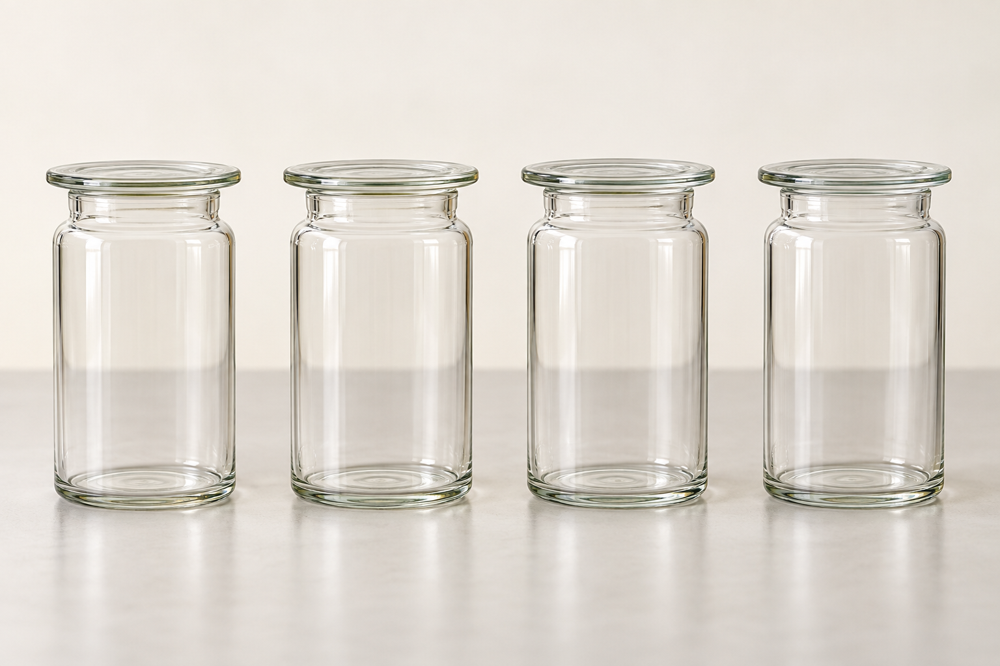
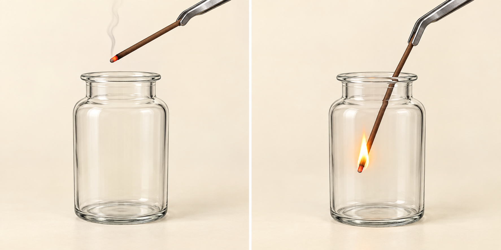
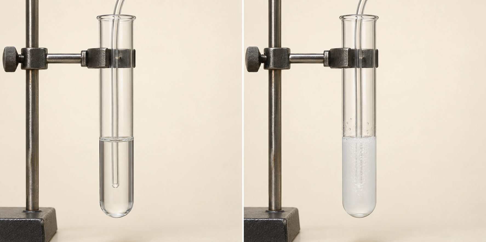
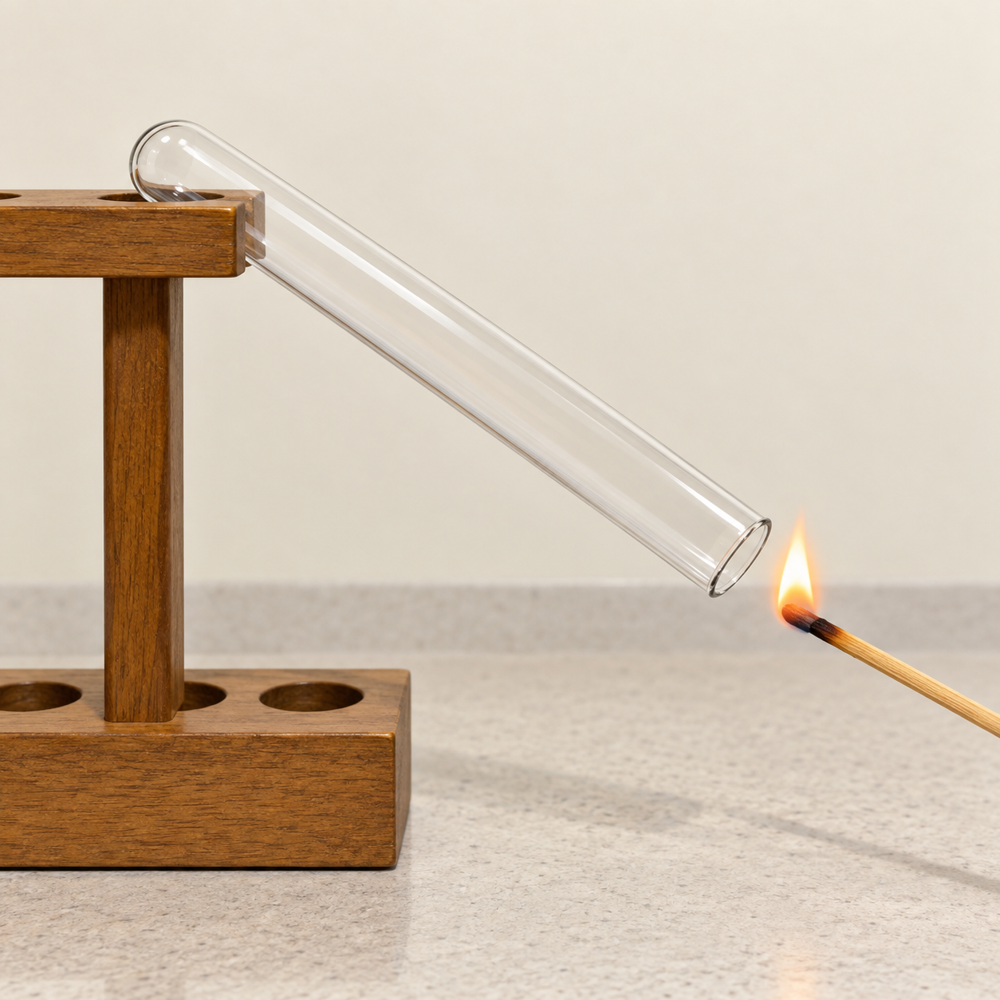
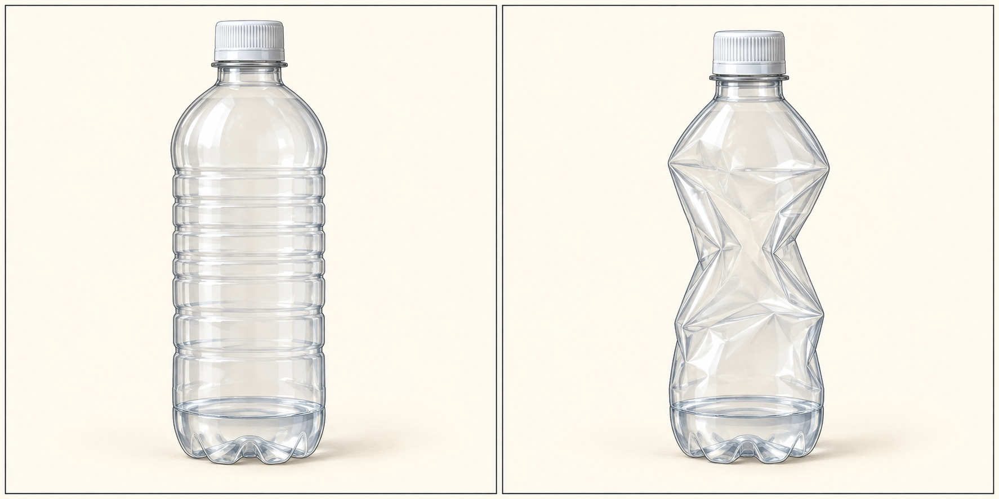
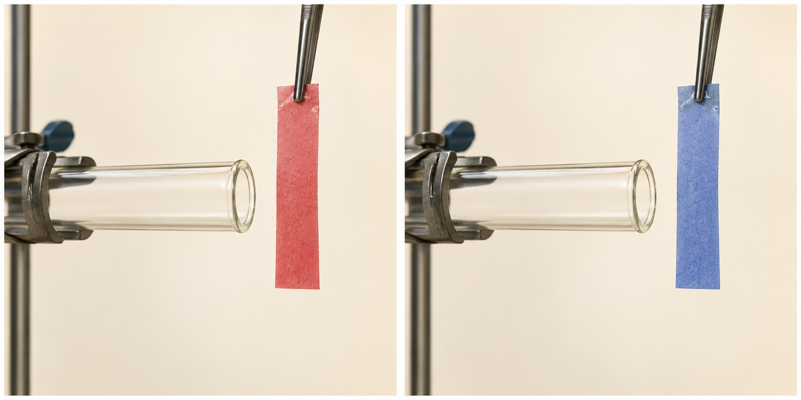
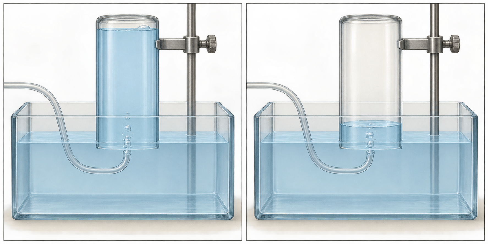
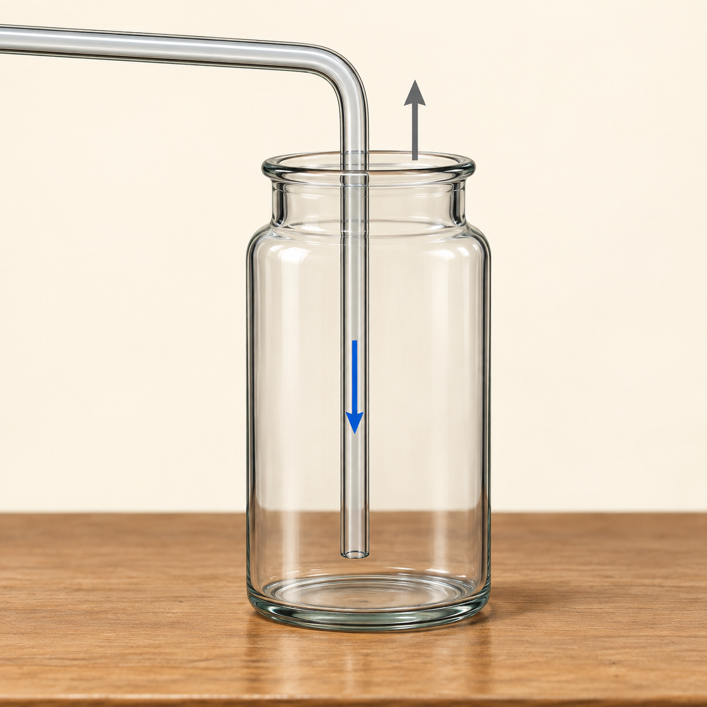
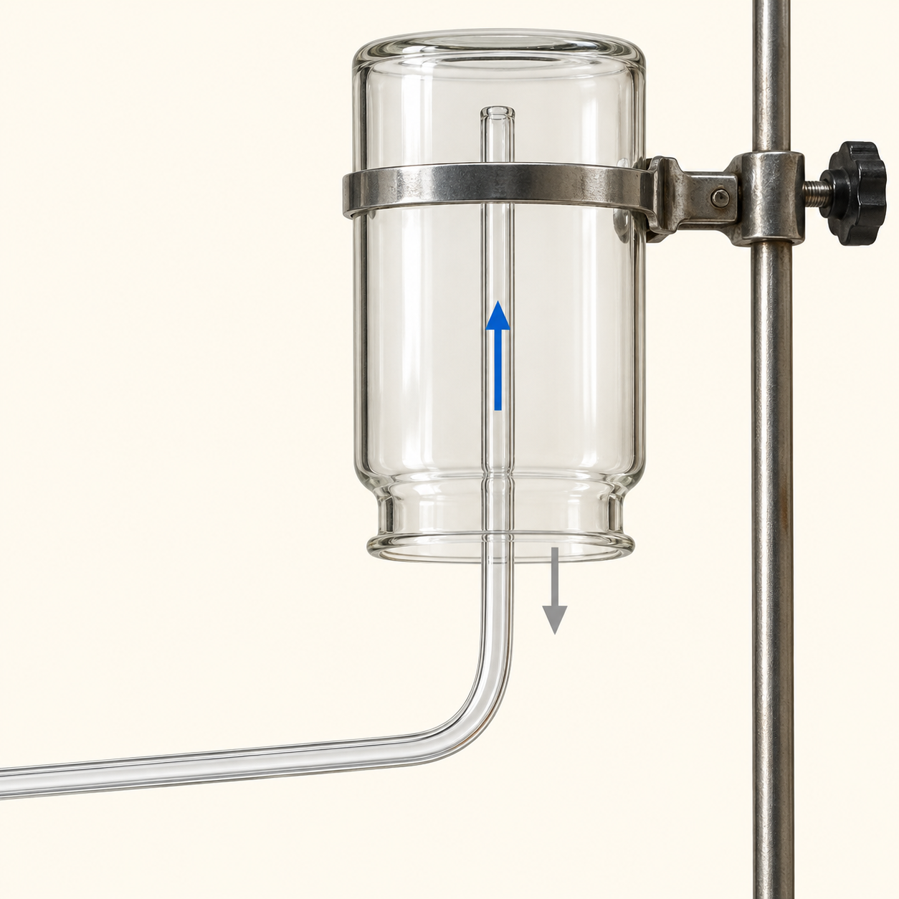

気体の性質
気体の性質

見た目が同じでも、性質は違う
気体の性質
空気には、何が含まれる？
窒素 約78％
酸素 約21％
その他 約1％
水蒸気を除いた空気の、体積の割合
空気は、いくつかの気体が混ざったもの
気体の性質
酸素の中に、火のついた線香を入れる

酸素を集めたびんで調べる
線香が激しく燃える
ものが燃えるのを助ける
覚えること
酸素の性質
ものが燃えるのを助ける
無色・無臭
空気より少し重い
水に溶けにくい
気体の性質
二酸化炭素を、石灰水に通す

はじめの石灰水は透明
白くにごる
二酸化炭素の確かめ方
覚えること
二酸化炭素の性質
石灰水を白くにごらせる
無色・無臭
空気より重い
水に少し溶ける
気体の性質
水素に、火を近づける

少量を別の試験管に集めて調べる
ポンッ
音を立てて燃える
水素の確かめ方
覚えること
水素の性質
燃えると、水ができる
無色・無臭
気体の中で最も軽い
水に溶けにくい
気体の性質
アンモニアに、少量の水を加える

アンモニアを入れた容器
水を加え、栓をしてふる
容器がへこむ
水に非常によく溶ける
気体の性質
水でぬらした赤色リトマス紙を近づける

アンモニアで調べる
紙は、先に水でぬらす
赤色から青色に変わる
水に溶けるとアルカリ性
覚えること
アンモニアの性質
ぬらした赤色リトマス紙を青色に
無色・刺激臭がある
空気より軽い
水に非常によく溶ける
気体の性質
気体を発生させる組み合わせ
| 気体 | 材料・方法の例 |
|---|---|
| 酸素 | うすい過酸化水素水 ＋ 二酸化マンガン |
| 二酸化炭素 | 石灰石 ＋ うすい塩酸 |
| 水素 | 亜鉛 ＋ うすい塩酸 |
| アンモニア | 塩化アンモニウム ＋ 水酸化カルシウムを加熱 |
実験は、先生の指示と安全な手順に従う
気体の性質
気体の「重い・軽い」も、密度で比べる
同じ温度・圧力で、同じ体積を比べる
空気より軽い
水素・アンモニア
空気より重い
酸素・二酸化炭素
酸素は少し重い。二酸化炭素は、さらに重い
空気は混ざり合う。重さだけで上下に分かれるわけではない。
気体の性質
集め方を選ぶ、二つの手がかり
まず、水への溶けやすさ
水を使わないなら、空気との重さの違い
水と置き換えるか、空気と置き換えるか
気体の性質
水上置換法

水で満たしたびんを
水中で逆さにする
気体が入り、水が出ていく
水に溶けにくい気体に使う
酸素・水素など
気体の性質
下方置換法

びんの口は上向き
管の先は底の近く
気体を下の方にためる
空気より重い気体に使う
例：二酸化炭素
気体の性質
上方置換法

びんの口は下向き
管の先はびんの上部
気体を上の方にためる
空気より軽い気体に使う
例：アンモニア
気体の性質
性質と、集め方をつなげよう
| 気体 | 水への溶けやすさ | 代表的な集め方 |
|---|---|---|
| 酸素 | 溶けにくい | 水上置換 |
| 水素 | 溶けにくい | 水上置換 |
| 二酸化炭素 | 少し溶ける | 下方置換・水上置換 |
| アンモニア | 非常によく溶ける | 上方置換 |
気体の性質・確認問題
この気体は、何だろう？
候補：酸素・二酸化炭素・水素・アンモニア
石灰水が白くにごった
二酸化炭素火を近づけると、ポンッと燃えた
水素ぬらした赤色リトマス紙が青くなった
アンモニア気体の性質・確認問題
アンモニアは、どう集める？
水に非常によく溶ける
空気より軽い
水上置換は使えない
びんの口を下に向ける
上方置換法
気体の性質・確認問題
水上置換で集めたら、同じ気体？
酸素も水素も、水上置換で集められる。
集め方だけでは、区別できない
酸素：線香が激しく燃える
水素：火を近づけると、音を立てて燃える
気体の性質
気体も、性質から見分けられる
確かめ方：燃え方・石灰水・リトマス紙
集め方：水への溶けやすさ・空気との重さ
観察した結果から、理由を説明しよう